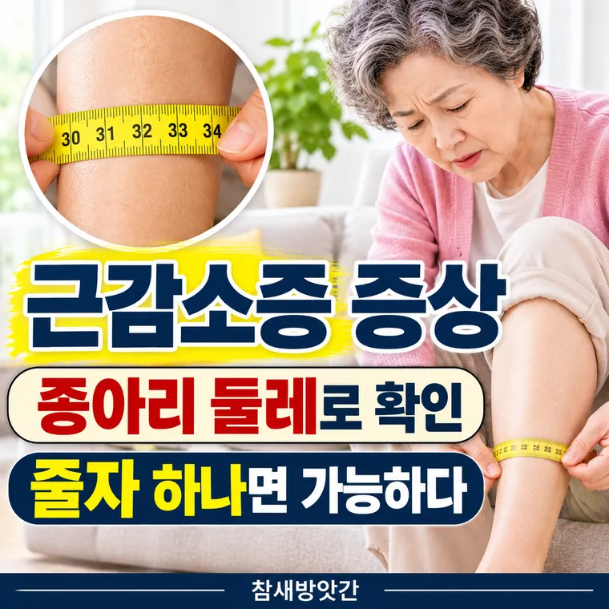

근감소증 증상과 자가 진단 기준 총정리: 종아리 둘레부터 병원 검사까지
나이가 들면서 예전보다 걸음걸이가 느려지거나 물병 뚜껑을 따기 힘들어졌다면 단순한 노화 현상으로만 넘기지 말아야 합니다. 근육량과 근력이 비정상적으로 줄어드는 근감소증은 낙상이나 골절, 각종 대사 질환의 위험을 높이는 주요 원인이기 때문입니다.

이 글에서는 일상에서 놓치기 쉬운 근감소증 증상과 발생 원인을 짚어보고, 집에서 간단히 확인해 볼 수 있는 신체 수치 기준을 정리했습니다. 의심 신호가 나타났을 때 병원에서 어떤 검사를 받고 어떻게 대처해야 하는지까지 명확하게 확인해 보시기 바랍니다.
근감소증 증상과 발생 원인은 무엇일까?
근감소증은 단순히 팔다리가 가늘어지는 외형적 변화를 넘어 일상적인 신체 기능 전반이 떨어지는 상태를 말합니다. 2022년 국민건강영양조사 결과에 따르면 국내 65세 이상 노인의 근감소증 유병률은 남성 6.6%, 여성 9.2%에 달하며, 기초 근력을 뜻하는 악력 저하는 남성 14.2%, 여성 18.8%로 훨씬 더 흔하게 나타납니다.
일상에서 나타나는 주요 근감소증 증상
근감소증이 진행되면 가장 먼저 다리 힘이 빠지면서 보행 속도가 눈에 띄게 느려집니다. 횡단보도를 파란불 안에 건너기 벅차거나, 평지에서도 발이 걸려 자주 비틀거리는 현상이 대표적입니다.
또한 젖은 수건을 짜거나 병뚜껑을 여는 손아귀 힘이 약해지고, 낮은 의자나 바닥에서 손을 짚지 않고 한 번에 일어나기 어려워집니다. 체중 변화가 없는데도 허벅지와 종아리가 유독 얇아졌다면 근육이 빠진 자리를 체지방이 채우고 있을 가능성이 큽니다.
근육이 빠르게 줄어드는 근감소증 원인
근감소증의 가장 근본적인 원인은 노화에 따른 호르몬 변화와 신경세포 감소입니다. 보통 30대 이후부터 근육량이 서서히 줄어들기 시작해 60대 이후에는 감소 속도가 더욱 가팔라집니다.
여기에 활동량 부족과 신체 활동 저하, 영양 섭취 불균형이 겹치면 근육 손실이 가속화됩니다. 당뇨병이나 만성 염증성 질환, 심혈관 질환 같은 기저질환이 있는 경우에도 염증 반응으로 인해 근육 합성이 방해받으며 근감소증이 쉽게 동반됩니다.
근감소증을 의심해볼 수 있는 신체 수치 기준
아시아 근감소증 진단그룹(AWGS)에서는 근력, 신체기능, 근육량을 종합해 근감소증 위험군을 선별하는 구체적인 기준을 제시하고 있습니다. 아래 수치에 해당한다고 해서 스스로 질환을 확정할 수는 없지만, 병원을 방문해 정밀 검사를 받아봐야 하는 중요한 의심 신호로 활용할 수 있습니다.
| 항목 | 남성 | 여성 |
|---|---|---|
| 악력 | 28kg 미만 | 18kg 미만 |
| 종아리 둘레 | 34cm 미만 | 33cm 미만 |
| 보행속도 | 초속 1.0m 미만 | |
| 의자 5회 일어서기 | 12초 이상 | |
근력과 신체기능 저하를 판단하는 AWGS 기준
아시아 근감소증 진단그룹(AWGS) 기준에 따르면 악력이 남성 28kg 미만, 여성 18kg 미만일 때 근력 저하가 있는 것으로 봅니다. 악력은 전신 근력을 반영하는 가장 기본적인 지표입니다.
신체기능의 경우 평소 걷는 보행속도가 초속 1.0m 미만으로 떨어졌거나, 팔걸이가 없는 의자에서 양팔을 가슴에 교차한 채 다섯 번 일어서는 데 12초 이상 걸리면 기능 저하로 판단합니다. 이러한 기준치를 벗어난다면 단순 노화가 아닌 근감소증 진행을 의심해 보아야 합니다.
집에서 줄자로 확인하는 종아리 둘레 측정법
악력계나 보행 측정 장비가 없는 가정에서 스스로 확인해 볼 수 있는 가장 현실적인 방법은 종아리 둘레를 재는 것입니다. 종아리는 피하지방이 적고 근육이 집중되어 있어 전신 근육량을 잘 반영하는 부위입니다.
의자에 앉아 무릎을 90도로 굽힌 상태에서 줄자를 이용해 양쪽 종아리 중 가장 굵은 부분을 측정했을 때, 남성 34cm 미만, 여성 33cm 미만이면 근감소증 가능성을 시사합니다. 줄자 측정 결과 기준치보다 둘레가 작게 나왔다면 혼자 판단하지 말고 의료기관을 찾아 정확한 진단을 받아보시기 바랍니다.
· 의자에 앉아 무릎을 90도로 굽힌다
· 종아리에서 가장 굵은 부분에 줄자를 두른다
· 줄자를 조이지 말고 피부에 닿을 정도로만 맞춘다
· 양쪽 다 재서 더 굵은 쪽 수치를 본다
근감소증 검사 방법과 병원에서의 치료 접근
자가 점검을 통해 근감소증이 의심된다면 정형외과, 재활의학과, 가정의학과, 노년내과 등을 방문해 객관적인 수치로 근육 상태를 확인해야 합니다.
병원에서 진행하는 근감소증 검사 과정
병원에서는 먼저 악력계를 이용한 근력 측정과 보행 속도, 의자 일어서기 같은 신체 수행 능력 평가를 진행합니다. 이를 통해 실제 근육이 제 기능을 하고 있는지 파악합니다.
이후 이중에너지 X선 흡수계측법(DXA)이나 생체전기저항분석법(BIA) 기기를 활용해 팔다리의 골격근량을 정밀하게 측정합니다. 최종적인 근감소증 진단은 이러한 정밀 기기 검사 결과와 전문의의 종합적인 의학적 판단을 거쳐 이루어집니다.
근감소증 치료와 관리의 핵심 방향
현재까지 근감소증만을 단독으로 완치하는 승인된 특효약은 없기 때문에, 근감소증 치료는 운동 요법과 영양 관리, 동반 질환 조절을 병행하는 방식으로 진행됩니다. 전문의의 진료 후 개인의 신체 능력에 맞춘 저항성 근력 운동과 유산소 운동을 처방받아 꾸준히 실천하는 것이 핵심입니다.
동시에 충분한 에너지와 필수 영양소가 골고루 공급되도록 식단을 점검해야 하며, 당뇨나 갑상선 질환 등 근육 감소를 유발하는 기저질환이 있다면 이를 함께 치료해야 근육 손실을 막을 수 있습니다.
지금 바로 실천할 수 있는 신체 점검 행동
근육이 줄어들면 신체 활동 능력이 떨어질 뿐만 아니라 우리 몸이 가만히 있어도 소모하는 에너지인 기초대사량까지 함께 낮아집니다. 지금 당장 집에 있는 줄자를 꺼내 의자에 앉은 자세로 종아리 가장 굵은 부위의 둘레를 직접 재어 보시기 바랍니다.
이와 함께 기초대사량 계산기에 현재 본인의 체중과 나이, 성별을 입력해 보세요. 근육량이 감소할 때 내 몸의 기초대사량이 어느 수준까지 떨어지는지 수치로 직접 확인해 보면, 향후 건강 관리와 병원 검진의 필요성을 훨씬 명확하게 체감할 수 있습니다.
자주 묻는 질문
Q1. 체중은 예전과 똑같은데 근감소증이 올 수 있나요?
네, 체중이 유지되거나 오히려 늘었더라도 근감소증이 발생할 수 있습니다. 근육이 빠진 자리를 체지방이 대신 채우는 '근감소성 비만'의 경우 겉으로 보기에 마르지 않아 방치하기 쉽지만, 실제 근력과 대사 기능은 크게 떨어져 있어 더욱 주의가 필요합니다.
Q2. 종아리 둘레가 기준치보다 작게 나오면 무조건 근감소증인가요?
아닙니다. 종아리 둘레(남성 34cm, 여성 33cm 미만)는 가정에서 근감소증 가능성을 빠르게 선별해 보기 위한 참고 지표일 뿐 확진 기준이 아닙니다. 수치가 기준 미만으로 측정되었다면 정확한 골격근량과 근력 확인을 위해 병원에서 정밀 검사를 받아보시는 것이 안전합니다.
Q3. 근감소증 검사는 어느 진료과로 가야 받을 수 있나요?
주로 재활의학과, 가정의학과, 노년내과, 정형외과에서 근감소증 관련 상담과 검사를 진행합니다. 모든 병원에 체성분 분석기(BIA)나 골밀도·근육량 측정기(DXA)가 구비된 것은 아니므로, 방문 전 해당 의료기관에 근육량 정밀 측정이 가능한지 문의해 보시는 것이 좋습니다.
이 글의 기준과 숫자는 2026년 11월 기준입니다. 진단 기준은 바뀔 수 있고 몸 상태에 따라 달라지니 참고용으로만 읽으세요. 진단은 의사의 영역입니다.